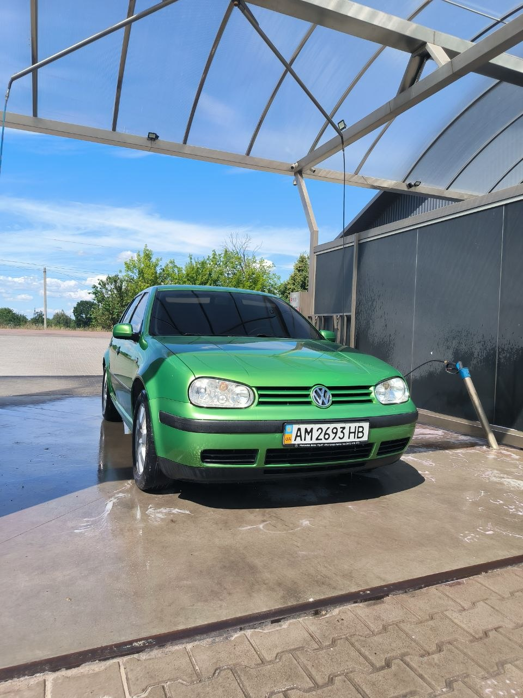

Volkswagen Golf IV — четверте покоління автомобіля компактного класу Volkswagen Golf, що випускалося концерном Volkswagen з 1997 по 2006 рр.
У серпні 1997 року відбулася прем'єра Golf IV. Зберігши загальні пропорції, Golf IV став більшим і важчим. Його довжина збільшилася до 4149 мм (131 мм), ширина - до 1735 мм (30 мм), а база - до 2511 мм (39 мм). За задумом конструкторів автомобіль повинен був вийти не дуже витонченим і зберегти масовість. Вперше на невеликих автомобілях Volkswagen застосували кузов, повністю виготовлений з оцинкованої сталі, що дозволило виробникові давати 12-річну гарантію від наскрізної корозії. Суттєвій переробці піддалася і ходова частина - Volkswagen зробив одне універсальне шасі відразу для всіх своїх автомобілів подібного класу - Audi A3, Skoda Octavia, Seat Toledo і навіть Audi TT.
Вражає список стандартного оснащення: АБС, фронтальні надувні подушки безпеки для водія і пасажира, дві бічні подушки в спинках передніх сидінь, дискові гальма на всіх колесах (передні вентильовані), підсилювач рульового управління із змінним передавальним числом і зусиллям на кермі, регульоване по висоті сидіння водія, пиловий фільтр повітря в системі вентиляції, підголовники на задніх сидіннях, пофарбовані в колір кузова бампери, ґрати радіатора і зовнішні дзеркала заднього виду. За бажанням, на центральній консолі клієнт може встановити навігаційну систему з рідкокристалічним дисплеєм. Golf IV має 3-х і 5-ти дверні кузова типу хетчбек і оснащується чотирициліндровими бензиновими і дизельними двигунами потужністю 68-180 к.с. Крім базової, існує чотири основні варіанти комплектації: Trendline, Comfortline, Highline і GTI. У четвертому поколінні поняття GTI виродилося в позначення комплектації. Golf GTI міг бути 115 - та 125-сильним (з атмосферними двигунами 2.0 л та 1.8 л), а з надувом - 150 - і навіть 180-сильним. Був навіть дизельний GTI 1.9 (150 к.с.). Середньоарифметичний 150-сильний GTI витрачав на розгін до сотні вісім секунд і розвивав 216 км/год.[3]